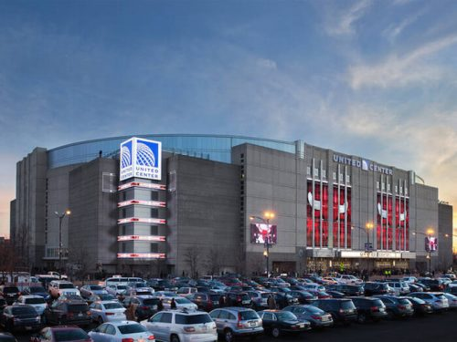

Los 5 estadios mas grandes de la NBA
United Center Capacidad 21.711 espectadores
El United Center de Chicago es la casa de los Chicago Bulls, fue el hogar de Michael Jordan durante sus últimos años en los Bulls y fue inaugurado en 1994
Rocket Mortgage FieldHouse 20.562 personas

Este estadio es donde hacen de local los Cleveland Cavaliers. También fue inaugurado en 1994 y anteriormente era conocido como el Quicken Loans Arena.
Little Caesars Arena 20.491 espectadores

La hoy casa de los Detroit Pistons es uno de los estadios más modernos que tiene la liga. Fue inaugurado en 2017 tras su estancia en el Palacio de Auburn Hills.
Wells Fargo Center 20.478 espectadores.

El Wells Fargo Center de los Philadelphia 76ers. Un estadio precioso y enorme cuya capacidad máxima es de 20.478 espectadores.
Capital One Arena 20.356 espectadores

Ubicado en la capital Washington y casa de los Wizards de esa ciudad. Fue abierto el 2 de diciembre de 1997, Fue testigo de los últimos años de Michael Jordan en la NBA, cuando jugaba para los Wizards.